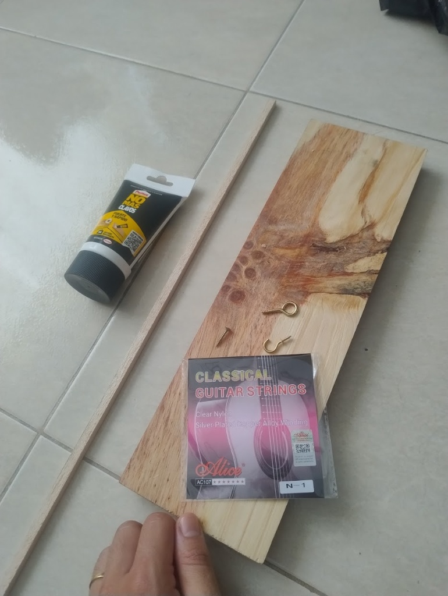
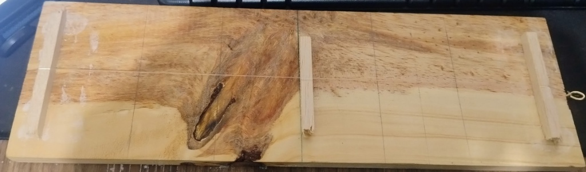

La Física de la Música
Ondas Estacionarias, Armónicos y la Escala Musical
Autores
Carlos Arturo Álvarez | Emmanuel Román | Eric Hernández
Fundamento Teórico: Ondas Estacionarias
- Una cuerda sujeta en ambos extremos vibra por la superposición de ondas incidentes y reflejadas.
- Se forman puntos sin movimiento (Nodos) y puntos de máxima oscilación (Vientres).
- La velocidad de propagación ($v$) depende de la tensión ($T$) y la densidad lineal de masa ($\mu$).
Ecuación de Taylor
La Ecuación de la Frecuencia
Dado que para el modo fundamental la longitud de onda es $\lambda = 2L$, la frecuencia de cualquier armónico $n$ es:
Deducción clave: La frecuencia ($f$) es inversamente proporcional a la longitud vibrante de la cuerda ($L$). Si alteramos la longitud física, alteramos inevitablemente la nota musical resultante.
Pitágoras (500 a.C.)
La Aritmética Musical
- •Demostró que el sonido no es un fenómeno místico, sino gobernado por relaciones numéricas.
- •Utilizó un Monocordio (instrumento de una cuerda con puente móvil).
El gran descubrimiento: Los intervalos musicales consonantes al oído humano corresponden a fracciones de números enteros pequeños.
Modelo Conceptual
del Monocordio
Los Intervalos Musicales Justos
Superposición de la Fundamental (Verde) con el Intervalo correspondiente en el osciloscopio temporal.
La Octava ($f_2$)
Longitud $L/2$. La frecuencia se duplica.
La Quinta Justa
Longitud $2/3 L$. Frecuencia x 1.5.
La Cuarta Justa
Longitud $3/4 L$. Frecuencia x 1.33.
La Coma Pitagórica
El Choque de Dos Mundos Matemáticos
El objetivo era construir una escala circular perfecta subiendo por Quintas (x1.5) hasta coincidir con las Octavas (x2). Pero las potencias jamás se igualan:
12 Quintas
7 Octavas
El resultado: Esta discrepancia acumulada creaba "La Quinta del Lobo", un intervalo que sonaba horriblemente desafinado al modular de tonalidad.
El Temperamento Igual (Siglo XVIII)
El sistema de compromiso: Se reparte el error matemático de forma equitativa entre los 12 semitonos de la octava para permitir la modulación armónica.
Factor de Incremento Constante
Sacrificamos la pureza absoluta de las fracciones naturales a cambio de viabilidad acústica.
(Ej: La Quinta pasa del $1.5000$ puro a $1.4983$).
El Montaje Experimental
Construcción y Calibración
Base de madera, armellas, puentes de balsa y cuerda calibrada mediante análisis espectral por FFT ($f_1 \approx 329.6\text{ Hz}$).
Precisión Métrica ($L=34\text{cm}$)
Puntos de fraccionamiento ($L/2, L/3, L/4$) rigurosamente establecidos para validar el modelo teórico.
Robustez del Modelo
Herramienta de bajo costo pero con alta capacidad demostrativa y precisión analítica.


Tabla de Resultados Esperados
Valores para una Frecuencia Fundamental Teórica de $329.6\text{ Hz} (E_4)$ y $L=34\text{cm}$
| Marca | Operación | Long. Efectiva ($L'$) | Frec. Teórica ($f$) | Nota | Intervalo |
|---|---|---|---|---|---|
| Al Aire | Ninguna | 34.0 cm | 329.6 Hz | Mi ($E_4$) | Fundamental (1:1) |
| Fase 1: Pisar (Acortamiento Físico) | |||||
| Marca $L/2$ | Pisar (Puente) | 17.0 cm | 659.2 Hz | Mi ($E_5$) | Octava Justa (2:1) |
| Marca $L/3$ | Pisar (Puente) | 22.7 cm | 494.4 Hz | Si ($B_4$) | Quinta Justa (3:2) |
| Marca $L/4$ | Pisar (Puente) | 25.5 cm | 439.5 Hz | La ($A_4$) | Cuarta Justa (4:3) |
| Fase 2: Rozar (Excitación Nodal) | |||||
| Marca $L/2$ | Rozar (Armónico) | 34.0 cm | 659.2 Hz | Mi ($E_5$) | Octava Justa (2:1) |
| Marca $L/3$ | Rozar (Armónico) | 34.0 cm | 988.8 Hz | Si ($B_5$) | Doceava Justa (3:1) |
| Marca $L/4$ | Rozar (Armónico) | 34.0 cm | 1318.4 Hz | Mi ($E_6$) | Doble Octava (4:1) |
Nota: El error experimental se calculará comparando estos valores teóricos con las mediciones de la app.
Modificación de Condiciones de Contorno
Contraste físico en la marca de $L/3$
1. "PISAR" (Acortamiento Físico)
- •El puente actúa como un extremo fijo rígido.
- •La cuerda vibrante se acorta físicamente a $L' = \frac{2}{3}L$.
- •Se altera la frecuencia base del sistema.
Frecuencia Resultante
$\approx 494.4 \text{ Hz}$ (Quinta Justa)
2. "ROZAR" (Excitación Nodal)
- •La longitud total ($L=34 \text{ cm}$) no cambia.
- •Se induce un nodo en la onda, aislando el modo superior de vibración ($n=3$).
- •La fundamental se anula.
Frecuencia Resultante
$\approx 988.8 \text{ Hz}$ (Doceava Justa)
Discusión de Condiciones de Frontera
Validación del Modelo frente a Entornos Reales
La evaluación experimental evidenció una notable concordancia con los modelos teóricos, presentando márgenes de error sistemáticamente inferiores al 1%.
Incertidumbre Longitudinal
El ancho plano del puente de balsa ($0.8 \text{ cm}$) introduce una leve incertidumbre en la longitud vibrante, explicando las pequeñas discrepancias frecuenciales.
Amortiguamiento Acústico
Los apoyos planos generan ligeras pérdidas de energía por fricción frente al modelo ideal de contactos sin dimensiones.
Conclusión Pedagógica: Lejos de invalidar la práctica, estas sutiles variables físicas sirven como andamiaje para discutir los límites de los modelos analíticos idealizados.
Evaluación Rápida
Pregunta 1 de 10"La música es el placer que experimenta la mente humana al contar sin darse cuenta de que está contando."
— Gottfried Wilhelm Leibniz
(Filósofo y matemático)
¡Gracias por su atención!
¿Preguntas o comentarios?
Anexo Interactivo
Simulación de Mástil de Guitarra